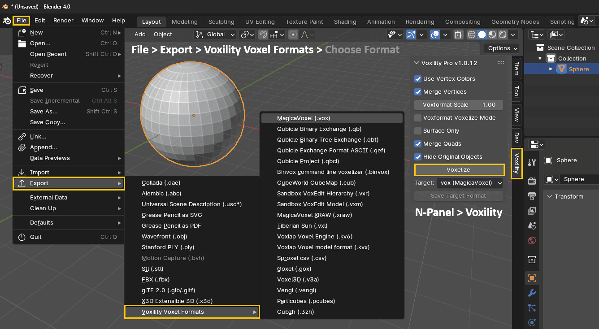
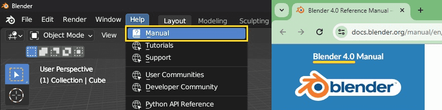
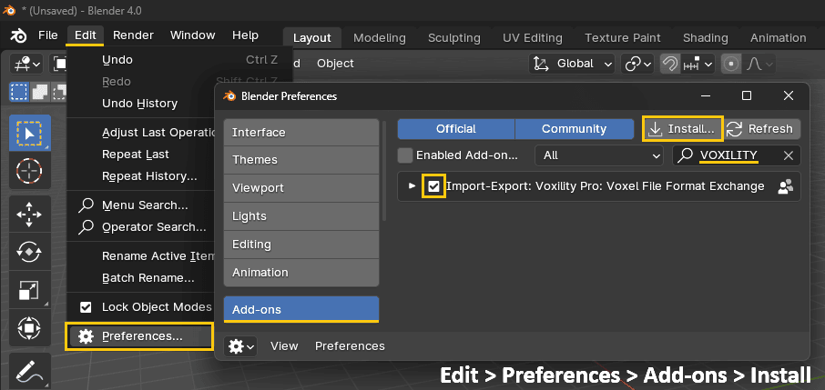
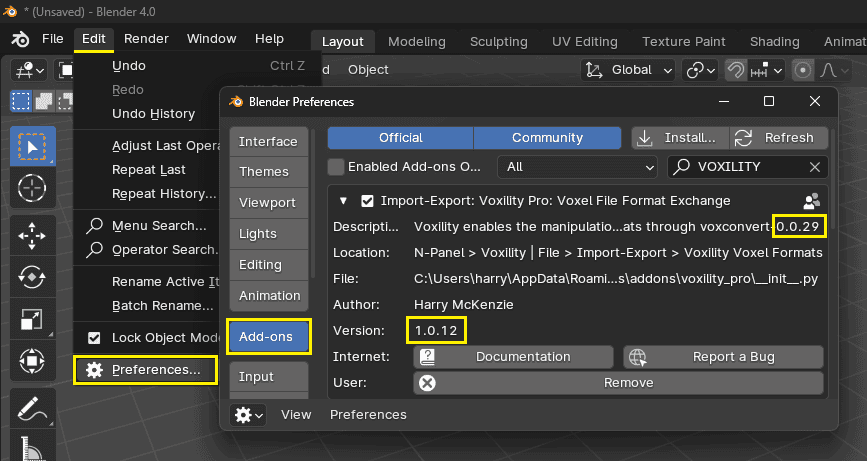
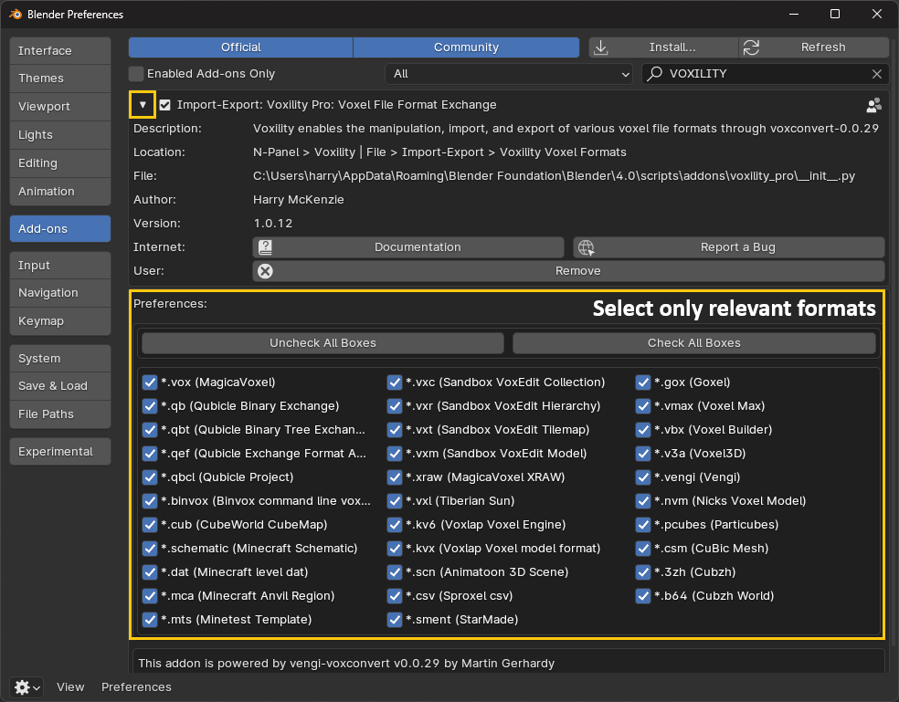
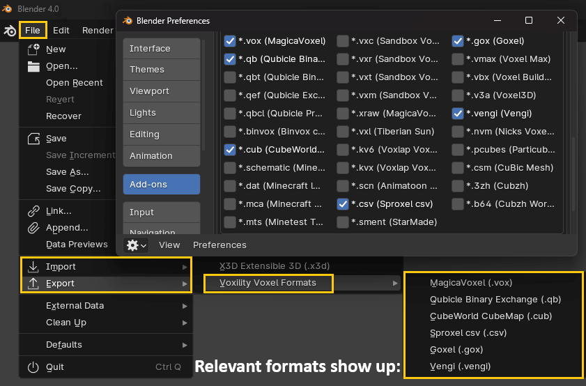

Voxility Pro: Voxel File Format Exchange is a comprehensive Blender addon designed to revolutionize your voxel-based workflows. With its intuitive features and seamless integration, Voxility Pro empowers artists and designers to unleash their creativity and explore new dimensions of voxel modeling within the familiar Blender environment.
Voxility Pro supports seamless import and export of various popular voxel file formats, including MagicaVoxel (.vox), Qubicle (.qb), Voxlap (.vxl), and many more, ensuring compatibility with a wide range of voxel editors and game engines.
Powered by vengi-voxconvert, a cutting-edge voxel conversion tool developed by Martin Gerhardy as part of Vengi Voxel — an open-source and multi-platform voxel editor — Voxility Pro brings unparalleled voxel conversion capabilities directly to Blender, enhancing your workflow and expanding your creative possibilities.
Voxility Pro offers a robust set of tools and functionalities tailored specifically for voxel modeling enthusiasts. From Mesh Conversion to Import and Export capabilities, Voxility Pro provides a complete solution for incorporating voxel-based techniques into your projects.

The primary goal of Voxility Pro is to simplify the process of working with voxel data in Blender while preserving the fidelity of your original models. One of its standout features is the ability to convert meshes with textures into voxel-type meshes. These voxel meshes can be exported to various formats such as .vox, .qb, .vxl, and more. Importantly, Voxility Pro preserves color information during this conversion process, enabling seamless transitions between traditional mesh modeling and voxel-based workflows.
Voxility Pro boasts a range of powerful functionalities, including:
| Feature | Description |
|---|---|
| Mesh Conversion | Transform polygonal meshes into voxel-based representations with ease. |
| Texture Preservation | Retain color information from textures during mesh-to-voxel conversion. |
| Import & Export | Seamlessly import and export voxel file formats for compatibility with various voxel editors and game engines. |
| Efficient Workflow | Intuitive tools and customizable settings streamline your voxel modeling workflow, enabling you to focus on your creative vision. |
Voxility Pro is compatible with Blender versions 2.93 to 4.0 and above, ensuring broad accessibility for Blender users. You can check your Blender version under menu Help > Manual :

It also supports import and export functionalities for popular voxel file formats such as MagicaVoxel (.vox) and Qubicle (.qb) and many more, providing flexibility and interoperability with other voxel editing software.
Voxility Pro supports a wide range of formats, and we are continually adding more support. Currently, the following types are supported, indicated by a checkmark for their corresponding import or export format.
| Name | File Extension | Import | Export |
|---|---|---|---|
| MagicaVoxel | vox | ✓ | ✓ |
| Qubicle Binary Exchange | qb | ✓ | ✓ |
| Qubicle Binary Tree Exchange | qbt | ✓ | ✓ |
| Qubicle Exchange Format ASCII | qef | ✓ | ✓ |
| Qubicle Project | qbcl | ✓ | ✓ |
| Binvox command line voxelizer | binvox | ✓ | ✓ |
| CubeWorld CubeMap | cub | ✓ | ✓ |
| Minecraft Schematic | schematic | ✓ | |
| Minecraft level dat | dat | ✓ | |
| Minecraft Anvil Region | mca | ✓ | ✓ |
| Minetest Template | mts | ✓ | |
| Sandbox VoxEdit Collection | vxc | ✓ | |
| Sandbox VoxEdit Hierarchy | vxr | ✓ | ✓ |
| Sandbox VoxEdit Tilemap | vxt | ✓ | |
| Sandbox VoxEdit Model | vxm | ✓ | ✓ |
| MagicaVoxel XRAW | xraw | ✓ | ✓ |
| Tiberian Sun | vxl | ✓ | ✓ |
| Voxlap Voxel Engine | kv6 | ✓ | ✓ |
| Voxlap Voxel model format | kvx | ✓ | ✓ |
| Animatoon 3D Scene | scn | ✓ | |
| Sproxel csv | csv | ✓ | ✓ |
| StarMade | sment | ✓ | |
| Goxel | gox | ✓ | ✓ |
| Voxel Max | vmax | ✓ | |
| Voxel Builder | vbx | ✓ | |
| Voxel3D | v3a | ✓ | ✓ |
| Vengi | vengi | ✓ | ✓ |
| Nicks Voxel Model | nvm | ✓ | |
| Particubes | pcubes | ✓ | ✓ |
| CuBic Mesh | csm | ✓ | |
| Cubzh | 3zh | ✓ | ✓ |
| Cubzh World | b64 | ✓ |
It is crucial to ensure that your system meets all the necessary requirements for running the addon effectively. Please verify the following requirements:
| Requirement | Description |
|---|---|
| Blender Version | Voxility Pro is compatible with Blender 2.93 up to 4.0 and later versions. |
| Operating System | Supported on Windows, Mac OS, and Linux platforms. |
| Hardware Requirements | Your system should meet the minimum hardware specifications recommended for running Blender smoothly. |
After downloading the Voxility Pro addon, you can install it in Blender by following these instructions:

To activate the Voxility Pro addon and unlock its full range of features, please follow the instructions provided below based on your respective Operating System. But first please review the following information. Take note of the voxconvert version, which is an executable binary file used within this addon, because this information may be needed after addon installation depending on your Operating System. For example, for the addon version 1.0.12 , the voxconvert version used is 0.0.29 which can be found inside the description of the addon under menu Edit > Preferences > Add-ons.

Also please take note of the Blender version used. You can get the version by navigating to menu Help > Manual which opens a browser. In this example the version is 4.0 .
If you are running Blender on Windows then you are all set. Please feel free to proceed to the Getting Started section.
If you are running Blender on Mac OS then.
Here are instructions to follow after you have installed the addon on Blender running on Mac OS. Due to this issue described here, you have to manually set the third-party vox-converter binary file as executable. To do this, simply do:
cd; cd Library/Application\ Support/Blender/4.0/scripts/addons/vox_exporter/voxconvert-executable/0.0.28/darwin/vengi-voxconvert.app/Contents/MacOS/; chmod +x vengi-voxconvert
Read the terminal console output and make sure there are no errors. Now you are good to go. Let us know if you have any issues. Enjoy!
Here are instructions to follow after you have installed the addon on
Blender running on Linux. Open the terminal and Copy the following
command text. Modify the text to adjust to your Blender version and the voxconvert
version if applicable.
cd ~/.config/blender/4.0/scripts/addons/vox_exporter/voxconvert-executable/0.0.28/linux/
Then paste the new modified text into the terminal and press Enter. Make sure the path is correct and there are no errors. Then copy each line and paste into terminal and press Enter. Read the terminal outputs because you may need to type in y for yes and press Enter to confirm installation.
sudo dpkg -i vengi-shared_0.0.28.0-1_amd64.deb
sudo dpkg -i vengi-voxconvert_0.0.28.0-1_amd64.deb
sudo apt-get install -f
vengi-voxconvert --version
Read the output for each line you execute and make sure there are no errors. If all is good you will see the last line print out the version. Close Blender and open again. Enjoy!
We'll walk you through the initial steps to familiarize yourself with our addon and its basic functionalities. Whether you're a newcomer or a seasoned user, this guide will help you navigate through the essential features and get you up to speed quickly.
Enhance the Addon by clicking the small arrow located to the left of the addon name and checkbox. This action will unveil a plethora of configuration options, allowing you to personalize your experience and tailor the application to meet your unique requirements.

Select the checkboxes corresponding to the voxel file formats you'll use. This streamlines the options list by hiding unnecessary choices during object import/export, preventing clutter and ensuring a smoother workflow. Below is an example of some selected options. Observe that the import list and export list (supported export formats only) now exclusively presents the options you've configured.

In this section, we'll provide an overview of the user interface to familiarize you with the main components and features.